跳跃蜘蛛
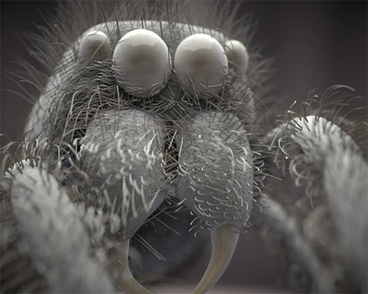
本教程是使用 XGen 样条线和 MtoA 的新手手册。其中介绍了如何将 XGen 样条线、Maya 的 Paint Effects 以及变形工具与 Arnold 渲染曲线结合使用，来为跳跃蜘蛛模型创建毛发。我们还将介绍设置曲线形状以及使其变形的方法，从而创建更逼真的效果。最后，我们将对蜘蛛模型本身进行着色和照明，以实现逼真的“电子显微镜”摄影效果。
- 首先，加载蜘蛛模型。该模型包含多个分离的多边形模型，我们可以对其应用毛发样条线。

XGen 样条线
我们将为每个身体部位创建不同的描述。下面我们先从腿部开始。
- 选择腿部几何体，然后转到“生成 > 创建描述”(Generate > Create Description)。此时将显示“创建 XGen 描述”(Create XGen Description)窗口。选择“可修饰样条线”(Groomable splines)，并单击“创建”(Create)。
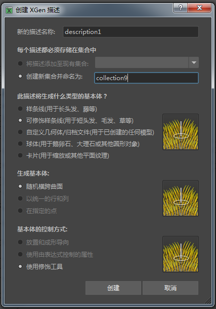
- 为了让视口自动更新 XGen 描述，我们启用“自动更新预览”(Update Preview Automatically)。这样，对描述所做的任何更改都将实时显示在 Maya 视口中，而无需每次更改后不停更新预览（眼睛图标）。
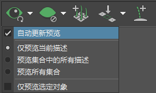
- 为了增加毛发的数量，我们必须增加“密度”(Density)值。转到“修饰”(Grooming)选项卡，然后在“设置”(Settings)下方，将“密度”(Density)值增加到 80。
 |
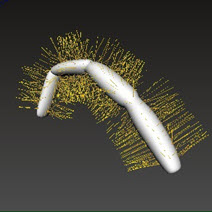 |
| 密度(Density)：1（默认值） | 密度(Density)：80 |
修饰(Grooming)
腿部
我们可以使用 XGen 的基于笔刷的修饰工具来设计腿部毛发的样式。
弯曲
首先，我们沿腿部的形状将曲线向下弯曲。
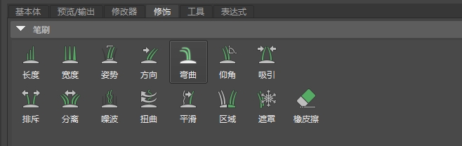
- 转到“修饰”(Grooming)选项卡，然后选择“弯曲”(Bend)笔刷。在视口中，将鼠标移到腿部上方。您应该会看到，光标已更改为笔刷工具。单击并沿腿部从上到下拖动笔刷。您应该会看到，顺着毛发拂刷时，这些毛发会发生弯曲。
| 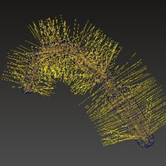 | 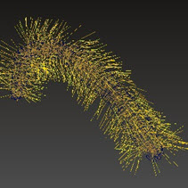 |
| 默认长度，未使用“弯曲”(Bend)笔刷 | 使用“弯曲”(Bend)笔刷 |
噪波
- 毛发看起来过于均匀。我们可以通过添加一些噪波将其散开。选择“噪波”(Noise)笔刷并顺着毛发重复拂刷。
| 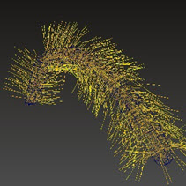 | 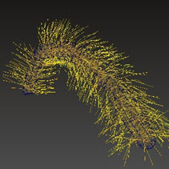 |
| 未使用“噪波”(Noise)笔刷 | 使用“噪波”(Noise)笔刷 |
腿部着色
- 完成曲线修饰后，选择腿部描述并为其指定 standard_surface 着色器。我们打算使用 standard_surface 着色器，而不是 standard_hair 着色器，因为我们需要一个没有镜面反射度的着色器，以便在渲染时实现“电子显微镜”的效果。
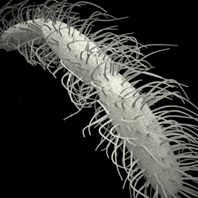
- 要对其他的腿添加相同的腿部描述，请选择其他腿部网格，然后转到“描述 > 绑定面片 > 添加选定面”(Descriptions > Bind Patches > Add Selected Faces)。
身体
我们可以复制腿部描述并将其用于身体。
- 选择腿部“To”，然后转到“描述 > 复制描述...”(Descriptions > Duplicate Description...)
- 重复上述用于将腿部几何体添加到描述的步骤。选择身体几何体，然后转到“描述 > 绑定面片 > 添加选定面”(Descriptions > Bind Patches > Add Selected Faces)。
- 为了将一些变化快速添加到身体描述，我们可以为它添加一个修改器。转到“修改器”(Modifiers)选项卡并单击“添加新的修改器”(Add New Modifier)。
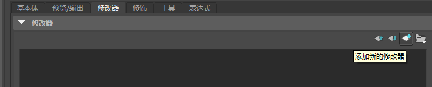
- 选择“噪波”(Noise)图标，然后单击“确定”(OK)。
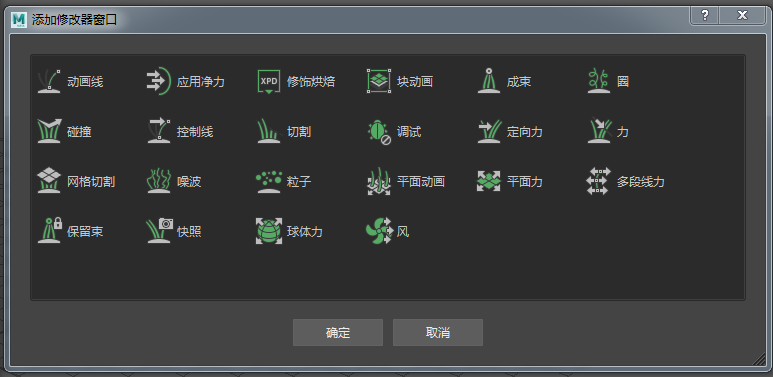
噪波修改器
- 增加“频率”(Frequency)和“幅值”(Magnitude)，从而获得所需的噪波量。在本例中，使用的“频率”(Frequency)为 4，“幅值”(Magnitude)为 1.3。
| 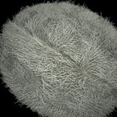 | 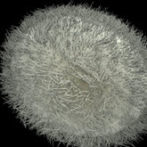 |
| 未使用噪波修改器 | 使用噪波修改器 |
头部
我们将 Paint Effects 笔刷用于头部，然后将其转化为曲线。将其转化为曲线后，我们将拥有更多的工具选择。对单个毛发曲线进行“成形”时，我们也可以更好地进行控制。
Paint Effects 笔刷
- 首先，选择头部几何体，然后转到“Paint Effects > 使可绘制”(Paint Effects > Make Paintable)。这样，我们便可直接在头部曲面上绘制我们的 Paint Effects 笔划。
- 打开“内容浏览器”(Content Browser)。选择“Paint Effects”选项卡，然后在 hair 文件夹下选择 furBunny.mel 笔刷。
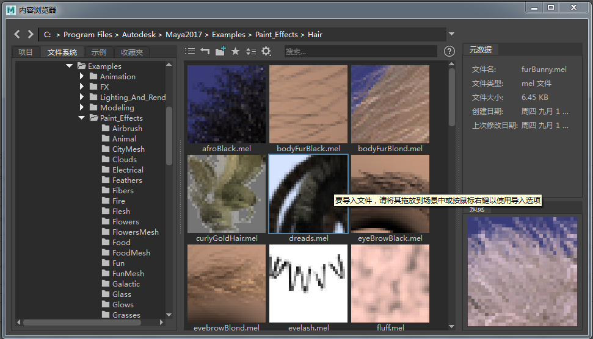
在 Hair 文件夹中选择“furBunny”笔划
- 绘制穿过头部的笔划，如下图所示。
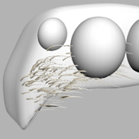
Paint Effects 修改器
当前，该笔划与眼几何体相交。我们希望笔划包裹眼球显示。为此，我们可以尝试使用 Paint Effects 修改器。
- 选择“furbunny”Paint Effects 笔划，然后选择“Paint Effects > 创建修改器”(Paint Effects > Create Modifier)。缩放修改器，使其与眼球的大小相同，然后将其放置在同一位置。增加“力”(Force)值。在下面的示例中，使用的值为 2。
 |
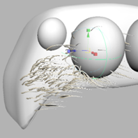 |
| 未使用线修改器 | 使用线修改器 |
雕刻 wv
“Paint Effects 修改器”并不能完全提供我们所需的效果，并且看起来有些过于随意。我们可以改为使用雕刻变形器使形状变形。但是，我们必须先将 Paint Effects 笔划转化为曲线，并删除 Paint Effects 修改器。
- 选择“furbunny”笔划，然后转到“修改 > 转化 > Paint Effects 到曲线”(Modify > Convert > Paint Effects to Curves)。
- 选择曲线，然后转到“创建变形器 > 雕刻变形器”(Create Deformers > Sculpt Deformer)（设置为“投影”(Project)模式）。
 |
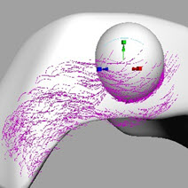 |
| 未使用雕刻变形器。笔划穿过眼睛。 | 使用雕刻变形器。眼睛周围曲线发生变形。 |
头顶
- 在头顶绘制另一个笔划。选择该笔划并将“全局比例”(Global Scale)增加到 6，以按照下图增大笔划的大小。
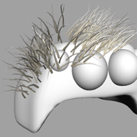
Paint Effects 笔划 - 全局比例(Global Scale)：6
为了拉回曲线，使它们不在另一侧重叠（我们想稍后再复制到对面），可以使用晶格变形器。
- 选择曲线末端，然后选择“创建变形器 > 晶格”(Create Deformers > Lattice)。选择晶格后，进入组件模式 (F8)，选择晶格的末端 CV 并将其向后移动，使它们不会在头部中心重叠。此外，您还可以使用此晶格进一步设置曲线的形状。
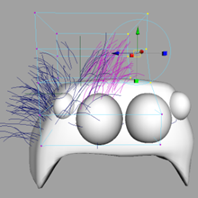
使用晶格变形器设置曲线的形状
- 对曲线效果感到满意后，请将其组合在一起，并沿 -Z 方向复制到头部的另一侧。
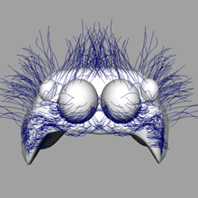
将曲线复制到头部的另一侧（-Z 方向）。
向曲线添加噪波
目前，这些曲线看起来非常对称，因为我们直接将一组曲线复制到了另一侧。一种降低对称性的方法是向曲线添加一些噪波变化。雕刻变形器包含一个选项，可使用纹理贴图使曲线变形。
- 选择右侧的一组曲线，然后转到“变形 > 雕刻”(Deform > Sculpt)。
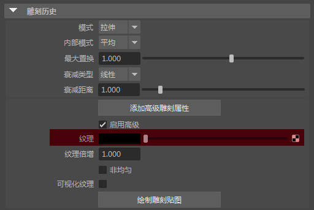
- 将噪波纹理添加到雕刻变形器的“纹理”(Texture)属性。要在视口中查看纹理，必须启用硬件纹理 -“着色 > 硬件纹理”(Shading > Hardware Texturing)。
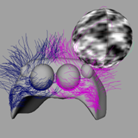
覆盖集
- 选择曲线，为其创建集 -“创建 > 集 > 集”(Create > Sets > Set)
- 在“属性编辑器”(Attribute Editor)中打开该集。在“Arnold”下，选择“添加”(Add)。此时应该会显示“添加覆盖属性”(Add Override Attribute)窗口。将以下属性添加到集。
- Ai 曲线着色器(Ai Curve Shader)
- Ai 曲线宽度(Ai Curve Width)
- Ai 模式(Ai Mode)
- Ai 渲染曲线(Ai Render Curve)
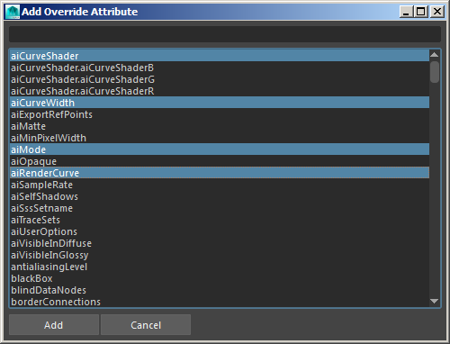
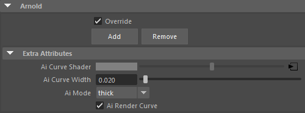
将覆盖属性添加到集
- 将 Ai 头发着色器连接到“Ai 曲线着色器”(Ai Curve Shader)属性。
- 将“Ai 曲线宽度”(Ai Curve Width)增加到 0.02，具体取决于您希望曲线呈现的厚度。
- 将“Ai 模式”(Ai Mode)更改为“有厚度”(thick)。这将使曲线形成圆管轮廓。
- 为要渲染的曲线选择“Ai 渲染曲线”(Ai Render Curve)。
着色
身体
蜘蛛的身体指定有“边缘着色器”，这会使蜘蛛看起来像是通过电子显微镜拍摄的。采样器信息节点连接到指定给 standard_surface.base_color 的渐变纹理。
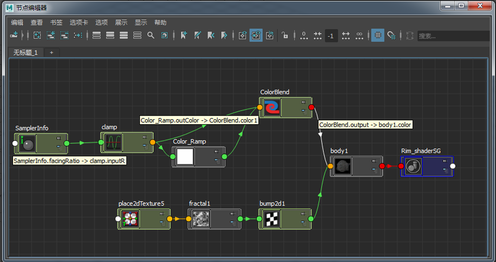
显示蜘蛛身体着色器的节点编辑器
照明
仅使用设置为“四边形”(quad)的大型 Ai 区域光（表示大型摄影柔光箱）为场景提供照明。将采样数增加到 3 以进行最终渲染。
| 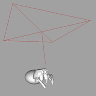 | 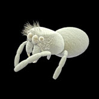 |
感谢 Pedro Fernando Gómez 在 XGen 方面提供的帮助。